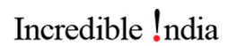
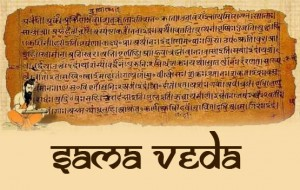
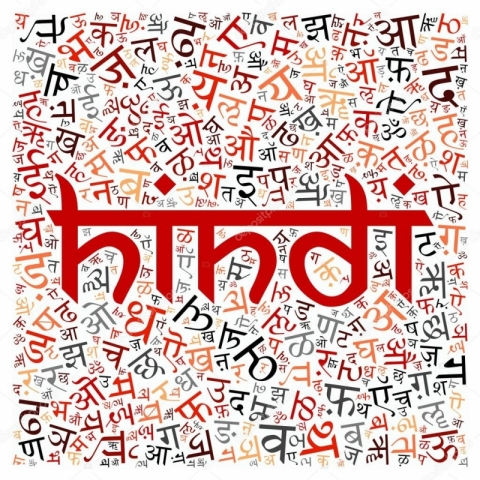
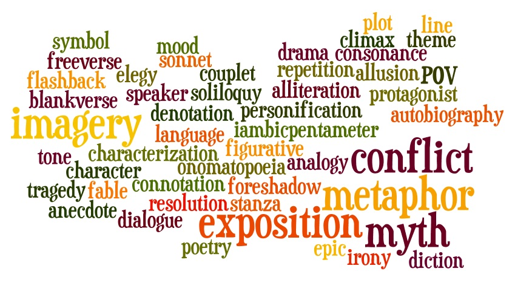

| Home | History | Place To Visit |  | Art & Culture | National Campaign | Contact Us |
 India has 22 officially recognised languages, and a huge variety of literature has been produced in these languages over the years. Hindu literary traditions dominate a large part of Indian culture. Apart from the Vedas, which are a sacred form of knowledge, there are other works such as the Hindu epics Ramayana and Mahabharata, treatises such as Vaastu Shastra in architecture and town planning, and Arthashastra in political science. The most famous works in Sanskrit are the Hindu holy texts like the Vedas, Upanishads, and Manusmriti. Another popular literature, Tamil literature has a rich literary tradition spanning over 2000 years, and is particularly known for its poetic nature in the form of epics, and philosophical and secular works. Other great literary works, which marked the golden era of Indian literature, include 'Abhijanam Shakuntalam' and 'Meghdoot' by Kalidasa, 'Mricchakatika' by Shudraka, 'Svapna Vasavadattam' by Bhaasa, and 'Ratnavali' by Sri Harsha. Some other famous works are Chanakya's 'Arthashastra' and Vatsyayana's 'Kamasutra'.
 Hindi literature started as religious and philosophical poetry in medieval periods in dialects like Avadhi and Brij. The most famous figures from this period are Kabir and Tulsidas. In modern times, the Khadi dialect became more prominent and a variety of literature was produced in Sanskrit. Chandrakanta, written by Devaki Nandan Khatri, is considered to be the first work of prose in Hindi. Munshi Premchand was the most famous Hindi novelist. The other famous poets include Maithili Sharan Gupt, Jaishankar Prasad, Sumitranandan Pant, Mahadevi Varma, and Ramdhari Singh 'Dinkar'. In the British era, a literary revolution occurred with the influence of Western thought and the introduction of printing press. Purposeful works were being written to support the cause of freedom struggle and to remove the existing social evils. Ram Mohan Roy's campaign for introduction of scientific education in India and Swami Vivekananda's works are considered to be great examples of the English literature in India. During the last 150 years, many writers have contributed to the development of modern Indian literature, written in a number of regional languages as well as in English. One of the greatest Bengali writers, Rabindranath Tagore became the first Indian to win the Nobel Prize for literature (Gitanjali) in 1913.
 Several other writers also became famous in the modern period of India, such as Mulk Raj Anand, who wrote famous novels like 'Untouchable' (1935) and 'Coolie' (1936), R.K. Narayan, who wrote novels and tales of village in southern India like 'Swami and Friends'. Among the younger authors is Anita Desai, who wrote famous novels like 'Clear Light of Day' (1980) and 'In Custody'. The other well-known novelist/ writers are Dom Moraes, Nlissim E Zekiel, P. Lal, A.K. Ramanujan, Kamala Das, Arun Kolatkar and R. Parthasarathy, Toru Dutt, Sarojini Naidu, Aurobindo, Raja Rao, G.V. Desani, M. Ananthanarayanan, Bhadani Bhattacharya, Monohar Malgonkar, Arun Joshi, Kamala Markandaya, Khushwant Singh, Nayantara Sahgal, O.V. Vijayan, Salman Rushdie, K.R. Sreenivasan Iyengar, C.D. Narasimhaiah and M.K. Naik. Among the latest are Vikram Seth ('A Suitable Boy'), Allan Sealy ('The Trotter-Nama'), Sashi Tharoor ('Show Business'), Amitav Ghosh ('Circle of Reason', 'Shadow Lines'), Upamanyu Chatterjee ('English August') and Vikram Chandra ('Red Earth and Pouring Rain').
| Thank You! |